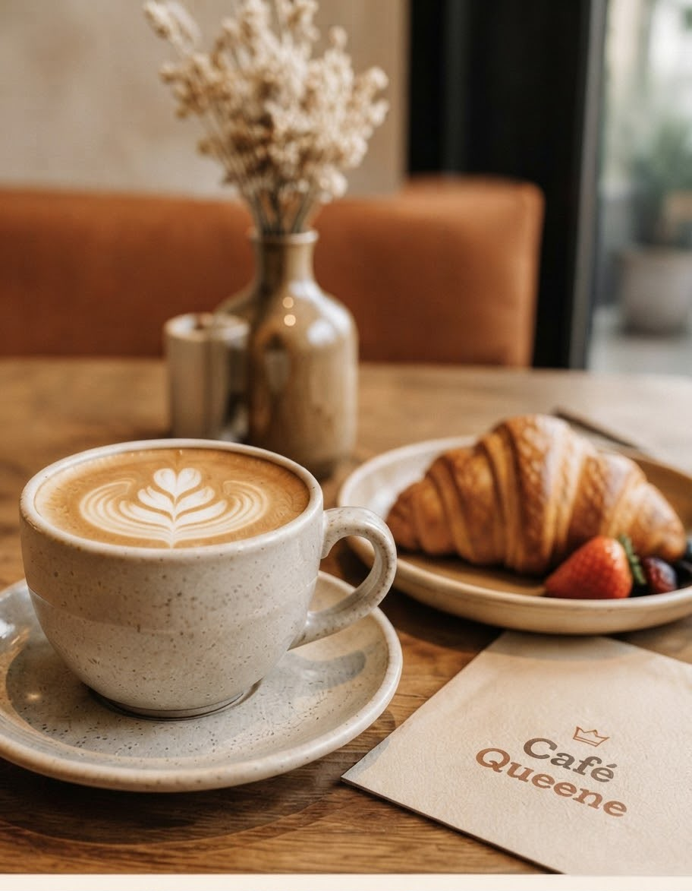

Quality Coffee
Rich, smooth and made with care.
Café Queene opened its doors in 2025 as a warm, unhurried kitchen and coffee bar — the kind of place you sit down properly, order a plate of something good, and stay a while.

More than just a café
Great coffee, delicious food and a space to relax and enjoy life.
Rich, smooth and made with care.
Fresh, flavourful and made daily.
A warm space to relax and connect.
Find a branch near you.
Our Story
Started by Queene Mavuso, Café Queene is built for students, young professionals, and remote workers who want more than a to-go cup — a place to actually sit down, plug in, and stay a while. Every detail, from the warm wooden tables to the all-day menu, is designed around that one idea: come as you are.
Read our full story →Two Branches
Our first home. A relaxed, work-friendly space right in the heart of Middelburg.
Our second branch, bringing the same coffee and kitchen to Nelspruit.